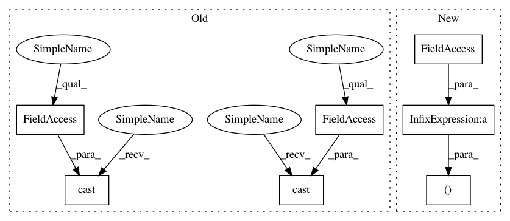

d8d1d07dd2a6b4a7d53a0232705a0430db6c1cf1,snorkel/learning/logistic_regression.py,SparseLogisticRegression,_build,#SparseLogisticRegression#,144
Before Change
tf.nn.sigmoid_cross_entropy_with_logits(h, self.Y)
)
self.train_fn = tf.train.ProximalGradientDescentOptimizer(
learning_rate=tf.cast(self.lr, dtype=tf.float32),
l1_regularization_strength=tf.cast(self.l1_penalty, tf.float32),
l2_regularization_strength=tf.cast(self.l2_penalty, tf.float32),
).minimize(self.loss)
self.prediction = tf.nn.sigmoid(h)
After Change
// Define training variables
sparse_ids = tf.SparseTensor(self.indices, self.ids, self.shape)
sparse_vals = tf.SparseTensor(self.indices, self.weights, self.shape)
s1, s2 = self.seed, self.seed + 1
w = tf.Variable(tf.random_normal((self.d, 1), stddev=0.01, seed=s1))
b = tf.Variable(tf.random_normal((1, 1), stddev=0.01, seed=s2))
z = tf.nn.embedding_lookup_sparse(
params=w, sp_ids=sparse_ids, sp_weights=sparse_vals, combiner="sum"
In pattern: SUPERPATTERN
Frequency: 3
Non-data size: 7
Instances
Project Name: snorkel-team/snorkel
Commit Name: d8d1d07dd2a6b4a7d53a0232705a0430db6c1cf1
Time: 2017-02-14
Author: henry.ehrenberg@outlook.com
File Name: snorkel/learning/logistic_regression.py
Class Name: SparseLogisticRegression
Method Name: _build
Project Name: snorkel-team/snorkel
Commit Name: d8d1d07dd2a6b4a7d53a0232705a0430db6c1cf1
Time: 2017-02-14
Author: henry.ehrenberg@outlook.com
File Name: snorkel/learning/logistic_regression.py
Class Name: LogisticRegression
Method Name: _build
Project Name: snorkel-team/snorkel
Commit Name: d8d1d07dd2a6b4a7d53a0232705a0430db6c1cf1
Time: 2017-02-14
Author: henry.ehrenberg@outlook.com
File Name: snorkel/learning/logistic_regression.py
Class Name: SparseLogisticRegression
Method Name: _build
Project Name: tensorflow/ranking
Commit Name: 6bf3f51cd0a312da842157665663c2dad9983248
Time: 2021-01-29
Author: xuanhui@google.com
File Name: tensorflow_ranking/python/losses_impl.py
Class Name: ClickEMLoss
Method Name: _compute_latent_prob